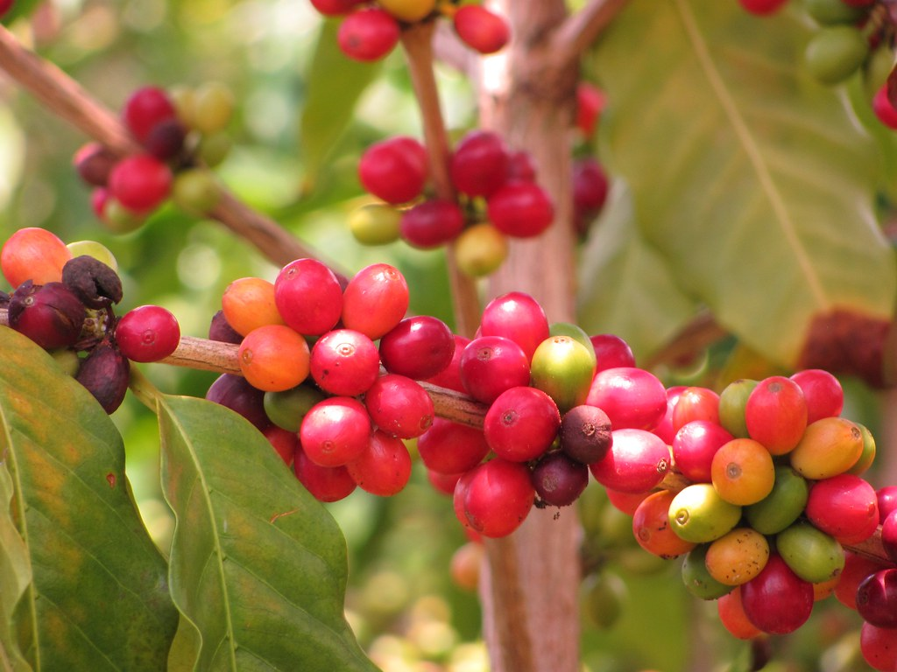

O café é separado em famílias e tipos, cada família define quais as caracteristicas das espécies. O CAFÉ PARDO cultiva duas das principais famílias de grãos comercializados no mercado, esses dois tipos de grãos são os que abrangem a maioria das variedades presentes na mesa do Brasileiro!
Café Arábica
Variedade destinada para os apreciadores do aroma, paladar e história do café. Cultivado apenas em altas altitudes, o café arábica é o mais comercializado no mundo, e é dele que surgiu o termo "café gourmet"
Leia mais...Café Robusta

O café popular e mais acessível dentre as variedades no mercado, possui um aroma familiar e sabor forte com amargor presente e característico do café forte, resistente a pragas e a locomoção durante o processo de transporte, o queridinho do povo brasileiro
Leia mais...